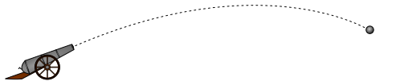
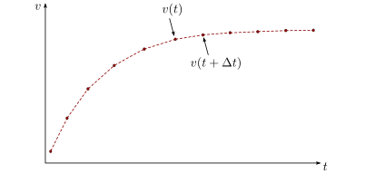
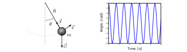

Workshop: Projectile Motion¶
An introduction to computing trajectories¶
This workshop focuses on introducing computations to introductory physics. Introducing computations should lead to a sense of empowerment For this to be possible, the computations must 1. Relate to well-known problems 2. Must be shown to be a powerful tool 3. Understable. Students should write their own code
The goal is to find the velocity and position of an object as functions of time: \(\vec{v}(t)\), \(\vec{r}(t)\)¶
 Equations of motion:
Newtons 2. law of motion:
Our algorithm is now as follows 1. Find the physical forces of the system. 2. Use Newtons 2. law to find the acceleration 3. Calculate ~ v(t) and~ r(t) by solving the equations of motion In this workshop, we will solve step number 3 numerically, using the Euler method.
The Euler Method¶
A method for solving ordinary differential equations (ODEs)¶
We can solve the equations of motion numerically using the Euler method From the definition of the derivative
We now remove the limit, making \(\Delta t\) a very small constant
Solving for \(v(t+\Delta t)\) gives
We can solve the equations of motion by stepping forward in time
If \(a(t)\) and \(v(t)\) are known, we can calculate \(v(t+\Delta t)\) 
Our functions are no longer continuous, they have become discretized¶
We only focus on multiples of our time-step
Introduce the shorthand
time discretization
We solve the equations of motion iteratively¶
For each time step, we must calculate the acceleration
We repeat these steps, starting at our initial conditions \(v_0\) and \(r_0\), until we have reached our end-time \(t_N\)
Algorithm for the Euler method¶
for \(i=0,1,2,3,\ldots, N-1\): 1. Use the previous results \(x_i\) and \(v_i\) to compute the acceleration: $ a_i = F(x_i, v_i, t_i)/m$. 2. Compute the new velocity: $ v_{i+1} = v_i + a_i:raw-latex:Delta `t$. 3. Compute the new position: $ r_{i+1} = r_i + v_i:raw-latex:Delta `t$.
Implementation¶
Moving from physics and math to actual computer code¶
for \(i=0,1,2,3,\ldots, N-1\): 1. Use the previous results \(x_i\) and \(v_i\) to compute the acceleration: $ a_i = F(x_i, v_i, t_i)/m$. 2. Compute the new velocity: $ v_{i+1} = v_i + a_i:raw-latex:Delta `t$. 3. Compute the new position: $ r_{i+1} = r_i + v_i:raw-latex:Delta `t$.
for i in range(N):
a[i] = F(r[i], v[i], t[i])/m
v[i+1] = v[i] + a[i]*dt
r[i+1] = r[i] + v[i]*dt
We want the code to look as much as possible like the physics and math we write on paper
We also need various bookeeping code¶
Here we define the arrays we will be using
# Import various functions meant for numerical science
import numpy as np
from math import cos,sin,pi
t_0 = 0 # Start time, s
t_end = 10 # End time, s
N = 1000 # Number of time steps
# Create a uniformly spaced time-array
t = np.linspace(t_0, t_end, N+1)
# Calculate the size of a time step
dt = t[1] - t[0]
# Create empty acceleration, velocity and position arrays
a = np.zeros((N+1,2))
v = np.zeros((N+1,2))
r = np.zeros((N+1,2))
# Set initial conditions
v[0] = (100*cos(pi/6), 100*sin(pi/6)) # inital velocity, m/s
r[0] = (0,1) # initial position, m
Here we define physical constants for our system and define the function that describes the forces
m = 5.5 # mass, kg
g = 9.81 # acceleration of gravity, m/s^2
rho = 1.3 # air density, kg/m^3
C_D = 0.45 # drag coefficient
d = 0.11 # diameter of cannonball, m
A = pi*d**2 # cross-sectional area, m^2
def F(r, v, t):
return (0, -m*g) - 0.5*rho*C_D*A*abs(v)*v
This example show the forces acting on the cannonball as it sails through the air
As soon as we have solved the equations of motion, we can plot the result
# Solving equations of motion iteratively
for i in range(N):
a[i] = F(r[i], v[i], t[i])/m
v[i+1] = v[i] + a[i]*dt
r[i+1] = r[i] + v[i]*dt
# Extract x and y coordinates
x = r[:,0]
y = r[:,1]
# Import functionality for plotting
import matplotlib.pyplot as plt
%matplotlib inline
# Plot figure
plt.plot(x,y)
# Prettify the plot
plt.xlabel('Horizontal distance, [m]')
plt.ylabel('Vertical distance, [m]')
plt.title('Trajectory of a fired cannonball')
plt.grid()
plt.axis([0, 900, 0, 250])
# Makes the plot appear on the screen
plt.show()

plot_cannonball1
Students can use numerical experimentation to build intuition and knowledge¶
- Numerical results can be compared to known analytical solutions. Are numerical results trustworthy?
- Can study how results are directly changed by parameter choice. Are the parameters chosen reasonable?
- Can look at systems with and without certain contributions, such as air drag. What is important, and what can be ignored?
Examples of possible projects¶
You will have a chance to look at some of these today
Catapults and cannons and sports such as baseball * Easy to compare with experimental data, either before or after simulation. * Can look into studies of air drag, Reynolds number etc.
Skydiving and bungeejumping¶
- Great study on free fall and terminal velocity
- Can study how parameters such as cross-sectional area and drag coefficient change as the parachute is opened
- Can plot the g-forces affecting the jumper. Which sport is more “extreme”?
Pendulum and angular motion¶

- Can solve pendulum also for large angles!
- Energy can beplotted as functions of time
- Can also simulate double pendulum and chaotic systems
Modelling the solar system¶
- Students can gather real data of planetary orbits from NASA webpages
- Can combine numerical simulation with better graphics